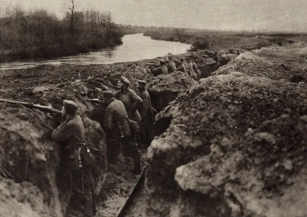
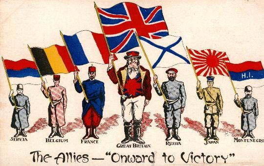

História
A Primeira Grande Guerra

-
A Primeira Guerra Mundial (1914-1918) foi o resultado dos atritos permanentes provocados pelo
imperialismo entre as grandes potências europeias.
O conflito durou quatro anos e começou em 28 de julho de 1914 e terminou em 11 de novembro de 1918, com
a vitória da Tríplice Entente formada por França, Inglaterra e Estados Unidos.
A Grande Guerra, como era denominada antes de acontecer a Segunda Guerra Mundial, foi um conflito em
escala global. Começou na Europa, envolveu os território coloniais da África e da Ásia e países da
América.
Dois blocos enfrentaram-se: a Tríplice Aliança, formada pela Alemanha, Áustria e Itália, e a Tríplice
Entente formada pela França, Inglaterra e Rússia.
A contenda envolveu 17 países dos cinco continentes como: Alemanha, Brasil, Áustria-Hungria, Estados
Unidos, França, Império Britânico, Império Turco-Otomano, Itália, Japão, Luxemburgo, Países Baixos,
Portugal, Reino da Romênia, Reino da Sérvia, Rússia, Austrália e China.
A guerra deixou 10 milhões
de soldados mortos e outros 21 milhões ficaram feridos. Também 13 milhões de civis perderam a vida.
-
A Tríplice Aliança foi uma aliança militar assinada por Alemanha, Áustria-Hungria e Itália em 20 de maio de 1882. Esse acordo foi parte da estratégia dessas três nações, mas sobretudo do governo alemão, para isolar os franceses e os russos no continente europeu. O tratado visava prevenir que o continente europeu se lançasse em guerra.
-
A Tríplice Entente foi uma aliança formada pela Inglaterra, Rússia e França a fim de resistir e contestar a Tríplice Aliança. Surgiu no início do século XX, em 1907.
